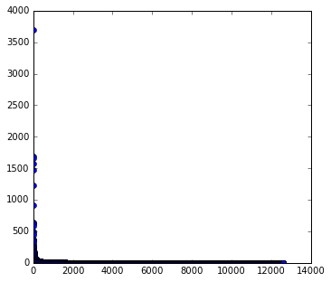
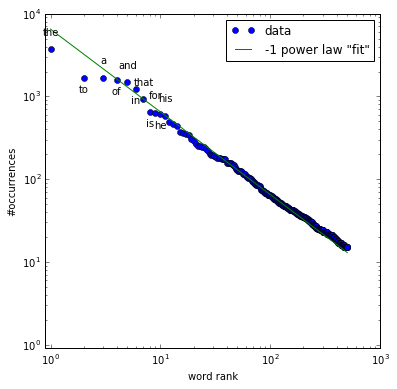

Zipf's Law
Mar 16, 2016The linguist George Kingsley Zipf, who theorised that given a large body of language (that is, a long book — or every word uttered by Plus employees during the day), the frequency of each word is close to inversely proportional to its rank in the frequency table.
In this guide we’ll write some code to look at some word distributions and power laws.
The data
The data folder contains 71 files:
- Thirty files labelled p0.txt – p29.txt, with text extracted from ten recent news articles about politics.
- Thirty files labelled s0.txt – s29.txt, with text extracted from ten recent news articles about sports.
- Ten files labelled t0.txt – t9.txt, which will be the “test set”.
First, let’s import the texts themselves into our notebook.
|
|
The following code iterates through the sixty training texts, and accumulates their word counts in the Counter object thewords:
|
|
For instance, we could look at the 10 most common words in the Counter object thewords by using the most_common method as follows:
|
|
[('the', 3692),
('to', 1688),
('a', 1665),
('of', 1578),
('and', 1478),
('in', 1223),
('that', 921),
('is', 644),
('for', 625),
('he', 612)]
|
|
Total number of words in the corpus:
|
|
63827
Rank frequency graph
The frequency of occurrence vs. the rank of the word.
Now we plot the number of occurrences in the thewords dictionary on the y-axis, ordered so that the word with the largest number of occurrences is plotted first, the word with second largest number of occurrences is plotted second, and so on.
|
|

As we notice from the graph above it is difficult to see the overall structure of this data since most of the values are so small. A standard method is to plot using logarithmic scales, so that a fixed distance along the axis corresponds to say a factor of 10 (rather than just adding 10). This can be implemented by adding xscale(‘log’) or yscale(‘log’), or both, before or after the plot() command; or by using loglog() instead of plot(). They give the same type of plot.
Now, we extract the counts for the top 500 words in our thewords dictionary, and plot those counts against the word ranks. We also annotate the top ten words on the graph with what they are. Finally we try to fit the data we have plotted with a straight line.
|
|

Results
Many data points do fall roughly along a straight line in log-log space (Zipf’s law), even for this tiny amount of data, which amount only to the sixty short training set articles.